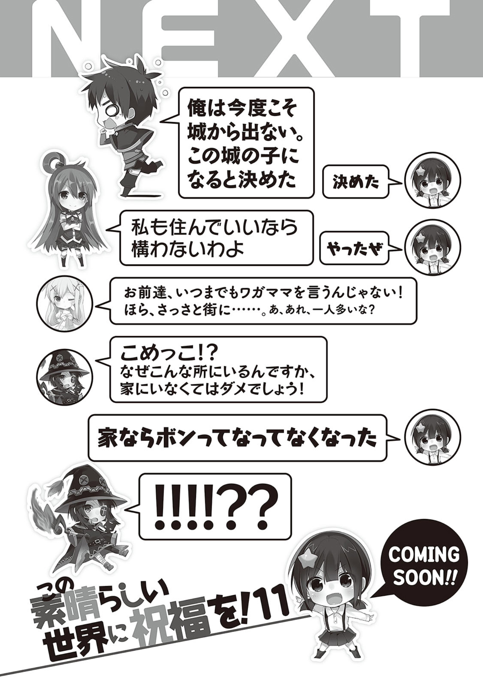

感谢各位购买第十卷。我是搬家到埼玉已经一年有余却出了便利店和百货以外基本没去任何地方一直蹲家里的暁なつめ。
难得住在离秋叶原只有三十分钟路程的地方，却完全没有享受大都市的繁华。
其实也不是特别忙，毕竟还有大把时间在家里打游戏。
但是，不知为何，我现在过得比在大山里那时更加宅。
这种作者近况实在是太没意义了，所以我们来说说其他的吧。
『续·为美好的世界献上爆炎』现在正在角川死你卡文库的官网连载。
因为之前在动画化的时候举办过人气投票，我承诺过人气投票第一位的角色要出外传。
之前我只是想写个几页纸的小短篇，没想到投票人数太多，感觉如果只写个几页会被骂死，所以赶快就开了新的WEB连载。
所以，人气投票第一位的惠惠出了外传，也就是外传续集。如果有兴趣的话不妨买来看看。
还有，月刊ドラゴンエイジ上的正传和选集，月刊コミックアライブ的爆炎系列以及webコミッククリア的四格漫画都在连载中，还请大家多多支持咯。
这次是久违的妹妹回合，而下一卷我打算让那个问题儿集团再次登场，敬请期待吧！
总之，这卷也多亏了插画三嶋教主，责编S老师，设计和校对老师，业务员们等各方的支持才得以平安出版。因此也感谢他们的辛勤付出。
同时，向买下本书的所有读者献上深深的感谢！
暁なつめ
画师后记
得到戒指后心情大好的爱丽丝殿下！
Λ Λ
（*￣△￣）三嶋くろね 2016

和真：这次绝对不会再出城了
小米：对
阿库娅：果我能一起住的话那就没问题哦
小米：好
达克尼斯：你们到底要任性到什么时候！？好了，快点回家……嗯，咦？好像多了一个人？
惠惠：米！？为什么你会在这里！？你不待在家里可不行啊！
小米：boom的一声就没了。
惠惠：！！！！？？
短篇 神在努（搞）力（事）
中午十一点。
穿着睡衣的阿库娅摇摇晃晃地走下楼，似乎还没睡够。
阿库娅瘫在沙发上看着今天负责做饭的惠惠辛劳地烹饪早餐兼午餐。
这之后，虽然睡眼惺忪却比别人多吃了一倍，然后再次躺在沙发上。
把泽尔帝放在肚子上进行午睡。
下午一点，吃饱睡好后，阿库娅回房里换上平常穿的衣服。
看来是太闲想去散步。
在求一边喝着红茶一边读书的达克尼斯给零花钱。
读书时光被妨碍的达克尼斯以明天负责洗盘子为代价给了她几个小钱。
下午两点。
看到阿库娅被家附近的老人们跪拜。
那是以『经常在夜里徘徊』而闻名的老爷爷，看来这下真的药丸。
被人拜了后心情很好的阿库娅给老爷爷加了个治愈后，开始散步。
一动不动地看着围墙上缩成一团睡着的猫。
她想摸猫，但或许是想起了逗之助平常的态度，没敢靠近。
把你吵醒了也怪可怜的，这次就饶你一命——她大声地自言自语了一句后，又夸张地点了点头自以为满足地离开了。
顺带一提她声音太大把猫吵醒了。
下午三点。
在报时的钟响的时候，阿库娅还在附近乱逛。
发现了可丽饼摊贩后，马上用之前达克尼斯给的零钱去买。
明明中午吃了这么多，现在居然还吃。
或许是把『三点吃零食』当成了义务。
她好像是这里的常客，用高高在上的语气说了一句『今天的可丽饼味道不错』。
店主送了她可丽饼的边角废料。
她一边开心地吃着一边继续散步。
下午三点半。
阿库娅乱入了在公园里堆沙子的小孩群落。
用水魔法将沙子弄湿，做出了等身大的哥布林。
她幼稚地摆出得意的表情，接受小孩们对哥布林沙雕的称赞。
被夸奖的她似乎很高兴，对小孩们说了一句『这个哥布林认杀认剐随你们』就走了。真不知道谁才是小孩子。
顺带一提哥布林被熊孩子一脚踢了个粉碎。
下午四点。
大摇大摆地进入城里的喷泉捡里面的硬币。
被路过的警官教训后，她开始宣称喷泉里的硬币都是用来供奉身为水之女神的她的，倒打一耙。
或许是从她的言行中看出她是阿库西斯教徒的警官一脸厌烦地说着『我懂了我懂了』后离开了。
似乎是逃过了牢狱之灾。
下午四点半。
进入维斯魔道具店后过了几分钟就出来了。
跟着出来的还有对她撒盐的巴尼尔。看来是被赶出来的。
等指着阿库娅鼻子骂了什么的巴尼尔回到店内后，阿库娅对门施了某个魔法。
门发出了耀眼的光芒。似乎是为了撒气而给商店施了神圣的结界。
在店里的巴尼尔嚷嚷了什么，但阿库娅捂住耳朵装作没听到似的跑路了。
从这熟练的犯罪过程来看，她已经是惯犯了。
下午五点。
阿库娅在商店街乱逛，因为在鱼店用水魔法给鱼换了水被鱼店老板感谢。又因为要去偷看酒场的酒被店主骂。
她好像在商店街混熟了，又是跟店主们打招呼又是给用来做买卖的水瓶里加满水被人感谢，总之她开心就好。
她一边嚼着店主送的鱿鱼干一边继续散步，来到了厄里斯教会。
嚼着鱿鱼干的她厚着脸皮排进了教会向乞丐们分发饭菜的队列中，她似乎也是这里的常客。厄里斯教徒们都无奈地叹息着将面包分给了她。
然后她又去排队，就这样拿了好几次面包。
最后，被人呵斥的阿库娅带着大量面包出逃。
下午六点。
到达阿库西斯教会的阿库娅和塞西莉一起向路人分发面包。
还在喊『对穷人的施舍并非厄里斯教独创的，阿库西斯教团也有这样的活动，请信奉阿库西斯教吧，阿库西斯教！』
……觉得已经没有必要再看下去的我决定回家。
「——喂，和真你听我说。今天我做了很多符合圣职者身份的好事。给老爷爷用了治愈，被老爷爷跪拜了。又被小孩子崇拜，封印了有恶魔居住的商店，被商店街的各位感谢，又去教会搞公益活动。请你多给善良而努力的我一些零花钱……」
「我今天一天都在用潜伏技能观察你平常在干嘛。你特么绝对不是女神吧！」